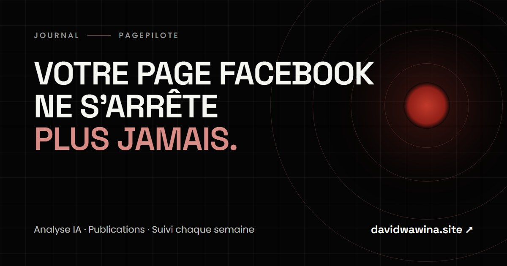

PagePilote : votre page Facebook ne s'arrête plus jamais
Un système de publication qui associe l'analyse par IA et un vrai suivi humain, pour les entreprises qui n'ont pas le temps de publier.

Votre page Facebook est silencieuse depuis combien de temps ?
Je pose la question parce que je vois la même chose partout autour de moi. Des entreprises sérieuses, avec de bons produits, qui publient une fois… puis disparaissent pendant trois semaines. Pas par paresse. Par manque de temps.
Le problème
- Vous savez qu'il faut publier régulièrement, mais vous n'avez pas le temps.
- Quand la page se tait, l'audience s'évapore et les clients vont chez celui qu'ils voient.
- Un community manager à plein temps coûte cher pour une PME.
- Publier au hasard ne marche pas : sans savoir ce qui plaît à votre audience, on perd son temps.
La solution : PagePilote
PagePilote est un système de publication qui associe l'analyse par intelligence artificielle et mon suivi humain.
- Analyse de votre page : l'IA étudie tous vos contenus. Elle relève votre ton, ce qui fait réagir, ce qui tombe à plat, votre audience, vos cibles et vos meilleurs horaires.
- Stratégie et calendrier : des thèmes de contenu adaptés à votre activité et un rythme qui vous convient (hebdomadaire, quotidien ou à la carte).
- Rédaction : vos publications sont préparées avec votre ton, prêtes à publier, avec des idées de visuels.
- Votre validation sur WhatsApp : rien ne sort sans votre accord. Un simple « OK » suffit.
- Publication programmée automatiquement aux meilleurs horaires.
- Suivi chaque semaine : chiffres, meilleure et moins bonne publication, ajustements. On garde ce qui marche et on corrige le reste.
Ce que vous gagnez : une page vivante toute l'année, sans y passer vos soirées, pour une fraction du prix d'un community manager.
Les formules (prix de lancement)
Essentiel — 15 $ / mois
- 3 publications par semaine
- Analyse IA de la page au départ
- Rédaction avec votre ton et programmation automatique
- Rapport mensuel
Croissance — 30 $ / mois (recommandée)
- 5 publications par semaine
- Analyse IA de la page chaque mois
- Visuels simples à vos couleurs
- 1 script de Reel par semaine
- Rapport hebdomadaire et veille des concurrents
Premium — 100 $ / mois
- 1 publication par jour
- Analyse IA de la page chaque mois
- Visuels simples à vos couleurs
- 2 scripts de Reels par semaine
- Rapport hebdomadaire, appel mensuel et veille des concurrents
Ces prix sont des prix de lancement, réservés aux premiers clients. Frais de mise en place : 30 $, une seule fois, pour l'analyse complète et la stratégie de départ. Offerts aux 10 premiers clients. Abonnement mensuel sans engagement long. Paiement par M-Pesa, Orange Money ou Airtel Money.
Offre de lancement
Audit gratuit de votre page pour les 10 premières entreprises : ce qui marche, ce qui ne marche pas et 3 actions à mettre en place tout de suite.
Pour le recevoir, écrivez-moi sur WhatsApp.
Pourquoi me faire confiance
- Je l'applique d'abord à moi-même : ma propre page est gérée avec ce système, chiffres à l'appui.
- Je suis développeur fullstack : 7 projets livrés (hôtels, école, média, entreprise de services, artiste), dont 5 sites en ligne.
- L'humain reste aux commandes : l'IA analyse et prépare, je vérifie, vous validez.
Ce que je ne promets pas
Pas de « 10 000 abonnés en un mois », pas de chiffres gonflés. Je promets une page régulière, cohérente et suivie, et des décisions prises à partir de vos vrais chiffres.
Ce qu'il faut pour démarrer
- Un accès à votre page avec le rôle Éditeur, via Meta Business Suite. Jamais votre mot de passe.
- Votre logo, vos couleurs et 10 à 20 vraies photos (équipe, produits, locaux).
- Vos offres, vos prix et les questions que vos clients posent souvent.
- Le rythme souhaité et un numéro WhatsApp pour les validations.
Votre page mérite mieux que le silence. Parlons-en sur WhatsApp.